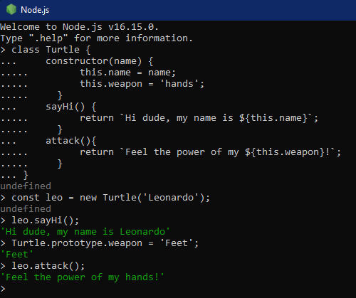
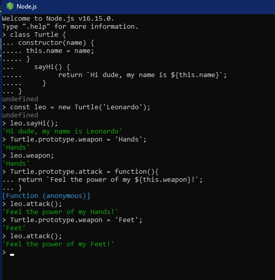
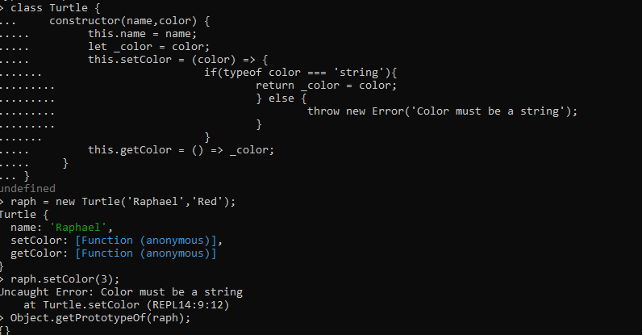
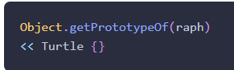

WDD 330 Portfolio
Week 4
links:
Notes:
- The form.submit() method will submit the form automatically. Note that submitting a form using this method won’t trigger the form submit event that's covered in the next section.
- hero.powers = [...form.powers].filter(box => box.checked).map(box => box.value); form.powers is made into an array. they are checkbox objects. the filter command gets each 'box' element and keeps only the checked one. and then map is called with that same array but instead of whole object, only the value is kept.
- objects with variable properties need a constructor or Class declaration
- Copying an object without the new object just referencing the original, use the "constructor": const greenDice = new redDice.constructor(10);
- "static" methods are not available to instances of the class.
-
> class Turtle {
... constructor(name,color) {
..... this.name = name;
..... let _color = color;
..... this.setColor = (color) => {
....... if(typeof color === 'string'){
......... return _color = color;
......... } else {
......... throw new Error('Color must be a string');
......... }
....... }
..... this.getColor = () => _color;
..... }
... }
- Adding something to Array that is apparently missing in JS
class myArray extends Array {
constructor(...args){
super(...args);
}
delete(i) {
return this.splice(i,1);
}
}
-
mixin
function mixin(target,...objects) {
for (const object of objects) {
if(typeof object === 'object') {
for (const key of Object.keys(object)) {
if (typeof object[key] === 'object') {
target[key] = Array.isArray(object[key]) ? [] : {};
mixin(target[key],object[key]);
} else {
Object.assign(target,object);
}
}
}
}
return target;
}
-
copy
function copy(target) {
const object = Object.create(Object.getPrototypeOf(target));
mixin(object,target);
return object;
}
-
factory
function createSuperhuman(...mixins) {
const object = copy(Superhuman);
return mixin(object,...mixins);
}
-
Issues with THIS
Use that = this -- A common solution is to set the variable that to equal thisbefore the nested function, and refer to that in the nested function instead of this. Here is the example again, using that:
You might also see self or _this used to maintain scope in the same way.
for of
arrow functions
- Only inherit once
- keep classes 'skinny'
Questions
-
The turtle class in the OOP in Javascript chapter is first created with a weapon and attack, I tried setting them to something different with the prototype. No errors, but when I called the weapon and attack they showed Hands.
I then redid it without adding them in the original declaration and was able to add hands and then feet and it changed accordingly


- There seems to be an error in the prototype chain seciont 
- Supposedly it should be: 